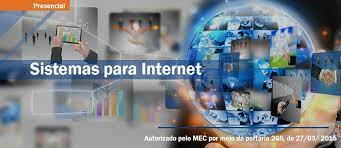

O que é Tecnologia em Sistemas para Internet?
O tecnólogo em Sistemas para Internet desenvolve e implanta sistemas informatizados, dimensionando requisitos e funcionalidades, especificando sua arquitetura, escolhendo ferramentas de desenvolvimento e programas e codificando aplicativos.
O que estuda em Sistemas para Internet?
O curso de Sistemas para Internet é uma graduação tecnológica com 4 semestres de duração. Nele, você aprende as competências para desenvolver, gerir e manter sites, portais, aplicativos, plataformas, entre outras soluções digitais.
